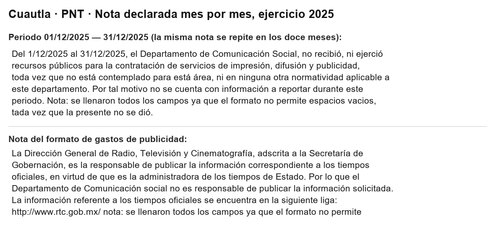
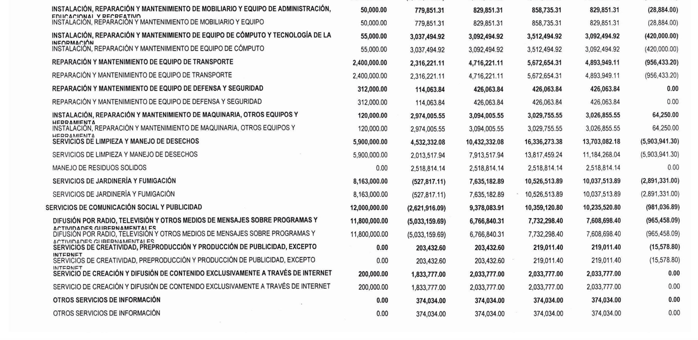
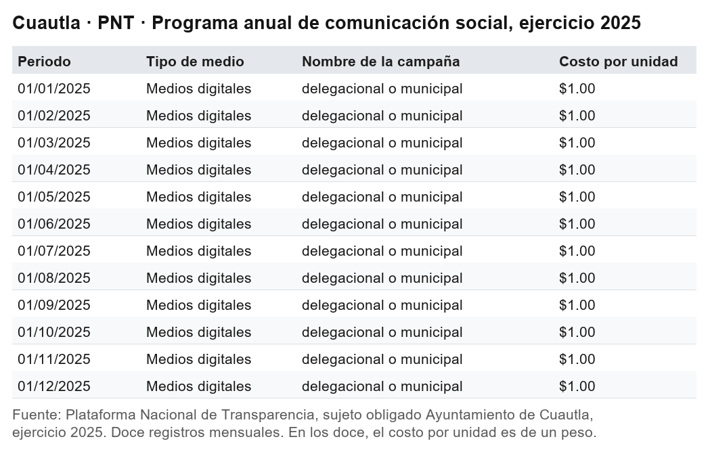
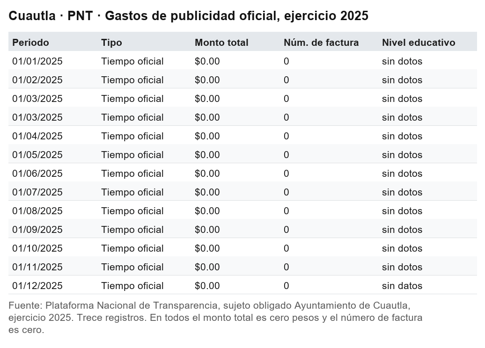
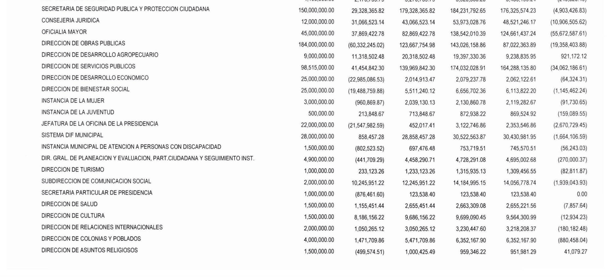
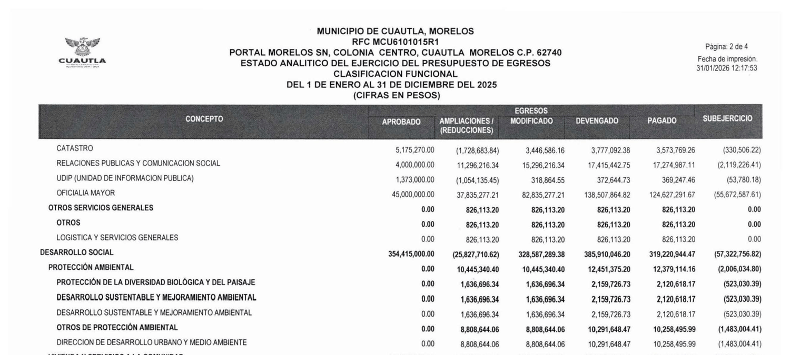
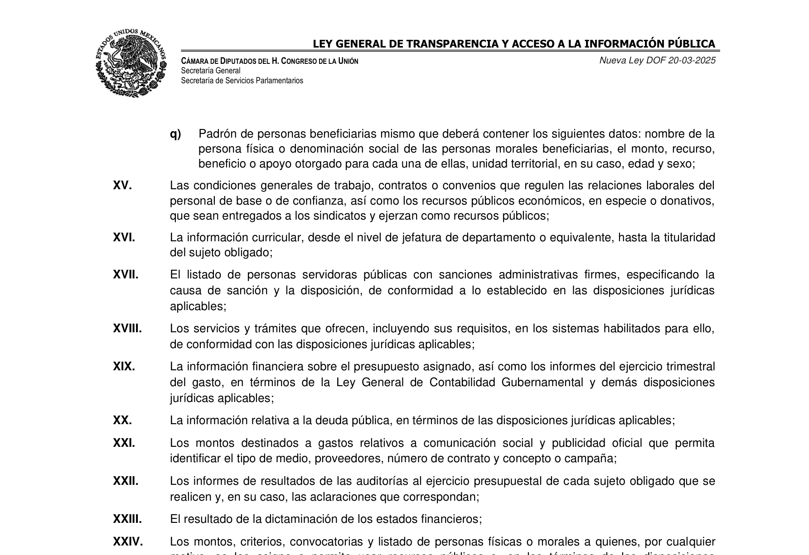

Cero pesos, diez millones
Doce veces, una por mes, el Ayuntamiento de Cuautla declaró a la Plataforma Nacional de Transparencia que su área de Comunicación Social no recibió ni ejerció recursos para difusión y publicidad durante 2025. Su propia cuenta pública registra 10 millones 235 mil pesos pagados en ese exacto capítulo. Es el ejercicio de Jesús Corona Damián, detenido en mayo de 2026 por extorsión y delincuencia organizada, en un municipio donde los delitos subieron 18.6 por ciento ese mismo año.

Un gobierno no puede decir nada más simple que esto.
Doce veces, una por cada mes de 2025, el Ayuntamiento de Cuautla subió a la Plataforma Nacional de Transparencia la misma frase. La copio textual, porque el punto está en las palabras exactas:
"el Departamento de Comunicación Social, no recibió, ni ejerció recursos públicos para la contratación de servicios de impresión, difusión y publicidad, toda vez que no está contemplado para está área, ni en ninguna otra normatividad aplicable a este departamento. Por tal motivo no se cuenta con información a reportar durante este periodo."
No recibió. No ejerció. Doce meses seguidos. Con la falta de concordancia incluida, que ahí sigue.

Su cuenta pública dice otra cosa.
Diez millones doscientos treinta y cinco mil
El Estado Analítico del Ejercicio del Presupuesto de Egresos de Cuautla, clasificación por objeto del gasto, tiene un capítulo que se llama exactamente igual que lo que el municipio declaró no haber hecho: Servicios de comunicación social y publicidad.
Presupuesto aprobado para 2025: 12 millones de pesos.
Devengado al 31 de diciembre: 10 millones 359 mil 120 pesos con 80 centavos.
Pagado: 10 millones 235 mil 520 pesos con 80 centavos.
Pagado. No comprometido, no devengado, no pendiente. Salió el dinero.
El desglose no deja lugar a la duda sobre en qué:
| Concepto | Aprobado | Devengado |
|---|---|---|
| Difusión por radio, televisión y otros medios sobre programas y actividades gubernamentales | 11,800,000.00 | 7,732,298.40 |
| Servicio de creación y difusión de contenido exclusivamente a través de internet | 200,000.00 | 2,033,777.00 |
| Otros servicios de información | 0.00 | 374,034.00 |
| Servicios de creatividad, preproducción y producción de publicidad | 0.00 | 219,011.40 |

Difusión por radio y televisión: siete millones setecientos treinta y dos mil.
Creación y difusión de contenido por internet: dos millones treinta y tres mil, contra doscientos mil autorizados. Un 917 por ciento por encima.
Dos conceptos que tenían cero pesos aprobados terminaron con dinero: producción de publicidad, 219 mil. Otros servicios de información, 374 mil.
Eso es lo que el municipio dice, en su propia contabilidad, que gastó en lo que declaró doce veces no haber gastado.
Un peso por campaña
Falta ver cómo llenó los formatos donde debía reportar ese gasto.
En el programa anual de comunicación social hay doce registros, uno por mes. En todos, el tipo de medio dice "medios digitales". En todos, el nombre de la campaña dice "delegacional o municipal", que no es un nombre sino la categoría de cobertura pegada en la casilla equivocada.
En todos, el costo por unidad dice lo mismo: un peso.

En el otro formato, el de gastos de publicidad, hay trece registros más. El tipo dice "tiempo oficial". El monto total dice cero pesos. El número de factura dice cero. En la casilla de nivel educativo alguien escribió "sin dotos", con la falta de ortografía incluida.

La nota que acompaña a esos trece explica que la Dirección General de Radio, Televisión y Cinematografía, adscrita a la Secretaría de Gobernación, es la responsable de publicar esa información. Esa es una oficina federal que administra los tiempos de Estado. No tiene nada que ver con la publicidad que un ayuntamiento contrata con su propio dinero.
Seamos justos con el peso
Aquí hay que conceder algo, porque si no esto sería un panfleto.
El municipio explica el peso. En la misma nota dice: "se llenaron todos los campos ya que el formato no permite espacios vacios".
Es cierto. El sistema de la Plataforma no acepta casillas en blanco, y quien captura pone lo mínimo que el formulario tolera. El peso no es una mentira sobre el precio: es un relleno confesado.
Lo mismo vale para el "sin dotos". Es un error de dedo de alguien que llenaba veintitantos campos obligatorios sin tener los datos. No es corrupción. Es una oficina chica capturando a las prisas.
Concedido todo eso, queda intacto lo que importa.
Porque el relleno explica el uno. No explica el cero.
Una cosa es escribir un peso porque el sistema no acepta vacíos. Otra distinta es declarar, doce veces, con todas sus letras, que no se recibieron ni se ejercieron recursos para difusión y publicidad, cuando la contabilidad del mismo ayuntamiento registra diez millones doscientos treinta y cinco mil pesos pagados en ese exacto concepto.
Eso no es un campo obligatorio mal llenado. Es una afirmación.
La dependencia, aparte
Hay un dato más, y conviene separarlo de lo anterior porque mide otra cosa.
En la clasificación administrativa, la Subdirección de Comunicación Social tenía un presupuesto aprobado de 2 millones de pesos y devengó 14 millones 184 mil 995. Un 609 por ciento por encima.
Esa cifra incluye todo lo de la oficina: sueldos, materiales, servicios. No es comparable peso a peso con el capítulo de publicidad, y decir que son lo mismo sería tramposo.
El relleno explica el uno. No explica el cero.
Pero sirve para lo único que estamos midiendo aquí, que es el tamaño. La oficina que declaró no haber ejercido recursos para difusión es la que más se pasó de su presupuesto en todo el ayuntamiento, en un año en el que a la Dirección de Obras Públicas le recortaron 60 millones 332 mil pesos.

La cuenta completa
¿Cuánto costó comunicar, en total? El propio municipio lo responde en la tercera clasificación de su cuenta pública, la funcional, que agrupa el gasto por su propósito. Ahí existe una función llamada Relaciones Públicas y Comunicación Social.
Presupuesto aprobado: 4 millones de pesos. Devengado: 17 millones 415 mil 442. Pagado: 17 millones 274 mil. Cuatro veces lo autorizado.
Esa es la cuenta completa de la comunicación municipal según el propio ayuntamiento: la oficina, su gente y la publicidad, agrupadas por propósito. Los diez millones del capítulo de publicidad y los catorce de la Subdirección no se le suman: son tres lentes sobre el mismo gasto y la cifra menor cabe en la mayor. Pero la mayor, la total, dice diecisiete millones y medio, contra cuatro aprobados, en el año en que se declaró doce veces que no se ejerció nada.

Quién firmaba estos documentos
Falta decir de quién estamos hablando, porque cambia el tamaño de todo lo anterior.
El ejercicio fiscal 2025 corresponde al primer año de la administración de Jesús Corona Damián, presidente municipal de Cuautla para el trienio 2025-2027.
El 30 de mayo de 2026 fue detenido en Acapulco, tras varios días prófugo, dentro del Operativo Enjambre. Se le acusa de extorsión y delincuencia organizada. Con él fueron detenidos su secretario municipal, su oficial mayor y su tesorero.
Ese tesorero es Jonathan Espinoza Salinas, y su nombre está firmado al calce del Estado Analítico del Ejercicio del Presupuesto de Egresos de 2025, que es el documento del que salen todas las cifras de esta columna.
Es decir: la cuenta pública que declara diez millones pagados en publicidad lleva la firma y el sello de un tesorero hoy detenido.
La historia de esa tesorería no se detuvo ahí. En julio de 2026 publicamos en este mismo espacio que la persona que ocupó el cargo después de Espinoza Salinas, Fabiola Castilo Sánchez, aparece en las operaciones del organismo operador de agua de Cuautla sin ser trabajadora suya: pagos por aguinaldo y gastos a comprobar por alrededor de 190 mil pesos, y transferencias por cerca de cuatro millones que salieron del organismo hacia el propio ayuntamiento, algunas rotuladas con un concepto tan singular como "pago por error".
De la misma documentación salió que Espinoza Salinas, mientras dirigía la caja municipal, cobraba además del organismo de agua por "asesoría".
Nada de eso está probado en sede judicial y así lo dijimos entonces. Pero dibuja el contexto en el que se firmaron estos números: una tesorería en la que el titular terminó detenido y su sucesora aparece en los libros del organismo de agua.
No estamos diciendo que los diez millones de publicidad tengan relación con esos delitos. No tenemos con qué afirmarlo y no vamos a afirmarlo.
Lo que sí decimos es más sencillo y no necesita suposiciones: en el año en que un ayuntamiento pagó diez millones de pesos a medios de comunicación sin identificar a uno solo, y declaró doce veces que no había pagado nada, quien lo gobernaba terminó detenido por extorsión, y quien firmaba sus cuentas también.
Hay un dato que conviene poner al lado, porque es el mismo municipio y el mismo año.
En 2025 los delitos en Cuautla pasaron de 6,361 a 7,543, un aumento del 18.6 por ciento. Las carpetas de investigación por extorsión fueron 259.
Diez millones para difundir mensajes. Un municipio con la extorsión disparada. Ninguna manera de saber qué medio cobró por difundir qué.
Qué obliga la ley
El artículo 65, fracción XXI, de la Ley General de Transparencia y Acceso a la Información Pública, la ley nueva publicada en el Diario Oficial el 20 de marzo de 2025, obliga a publicar "los montos destinados a gastos relativos a comunicación social y publicidad oficial que permita identificar el tipo de medio, proveedores, número de contrato y concepto o campaña".

Cuatro cosas: medio, proveedor, contrato y campaña.
En los registros de Cuautla no hay ninguna de las cuatro. Hay una categoría genérica en el lugar del medio. Hay una categoría de cobertura en el lugar del nombre de la campaña. Hay un peso en el lugar del monto. Hay un cero donde va la factura.
Diez millones de pesos salieron de la tesorería municipal hacia medios de comunicación. Ni uno solo de esos medios es identificable en el lugar donde la ley obliga a identificarlos.
Por qué importa quién cobró
Podría parecer una minucia de expediente. No lo es.
Cuando un municipio contrata publicidad, el dinero va a medios de comunicación. Saber cuánto, a quién y por qué concepto es lo único que permite al ciudadano juzgar si su ayuntamiento está informando o está comprando cobertura.
Nosotros somos un medio. Por eso conviene que quede escrito: la lista de a quién le pagó Cuautla diez millones de pesos en 2025 debería ser pública, y si algún día aparece, ahí tendrá que estar quien haya cobrado, seamos quienes seamos.
Esa lista no existe. No porque alguien la haya escondido, sino porque el formato donde debía estar se llenó con un peso y un cero.
La pregunta de siempre
Todo lo anterior salió de abrir dos documentos públicos y gratuitos. Nos tomó una tarde.
La Entidad Superior de Auditoría y Fiscalización del estado, que cuesta 50 millones 400 mil pesos al año, fiscalizó la cuenta pública de Cuautla del ejercicio 2022 y entregó el resultado al Congreso el 17 de diciembre de 2024. La de 2025 todavía no la revisa.
Cuando la revise, esta administración habrá terminado.
Un municipio puede declarar doce veces que no gastó un peso en difusión, pagar diez millones doscientos treinta y cinco mil, y no pasa nada.
Puede, porque nadie está leyendo las dos cosas el mismo día.
Nosotros las leímos.
Documentos que respaldan cada cifra
Las capturas que acompañan esta columna son las páginas de donde salió cada cifra: los formatos que el propio ayuntamiento subió a la Plataforma Nacional de Transparencia, las dos páginas de la cuenta pública 2025 con el capítulo de publicidad y el renglón de la subdirección, y el artículo de ley que se cita, reproducido del texto oficial vigente. Cualquier lector puede rehacer el ejercicio con los mismos documentos, que son públicos y gratuitos.
Antecedente: No era solo la basura Ver el expediente →
- Plataforma Nacional de Transparencia, sujeto obligado Ayuntamiento de Cuautla, ejercicio 2025: programa anual de comunicación social (doce registros) y gastos de publicidad oficial (trece registros). consultapublicamx.plataformadetransparencia.org.mx. Consulta del 4 de agosto de 2026.
- Municipio de Cuautla, Estado Analítico del Ejercicio del Presupuesto de Egresos, clasificación por objeto del gasto, administrativa y funcional, Cuenta Pública anual 2025. Fecha de impresión del documento: 31 de enero de 2026.
- Ley General de Transparencia y Acceso a la Información Pública, Nueva Ley publicada en el Diario Oficial de la Federación el 20 de marzo de 2025, artículo 65, fracción XXI. Cotejado contra el texto vigente, página 19 del documento oficial.
- 45 Digital Noticias, "El pasado que se sienta en la tesorería", 29 de julio de 2026, sobre las operaciones del organismo operador de agua de Cuautla y las tesorerías de Jonathan Espinoza Salinas y Fabiola Castilo Sánchez.
- Detención de Jesús Corona Damián, 30 de mayo de 2026, Operativo Enjambre: Aristegui Noticias, El Universal y Expansión Política.
- Incidencia delictiva de Cuautla 2024-2025 y carpetas de extorsión: Secretariado Ejecutivo del Sistema Nacional de Seguridad Pública, corte de diciembre de 2025, procesado en el tablero de inseguridad de 45 Digital Noticias.
- 45 Digital Noticias, "Cincuenta millones y ni una palabra", 10 de agosto de 2026.
- 45 Digital Noticias, "No era solo la basura", 11 de agosto de 2026.
Las ligas van a la vista para que cualquiera compruebe por su cuenta. Si alguna dejó de resolver, escríbenos y la reponemos.
SRVO